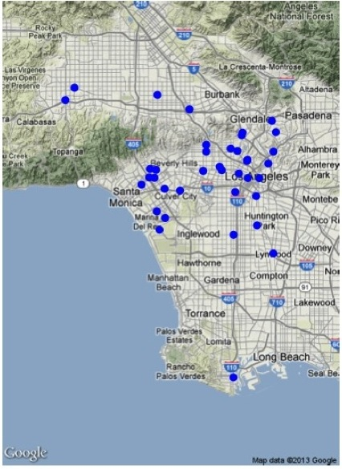

R is my favorite language. It's free and open source, it's used by statisticians worldwide, and the community of users is always adding new packages to CRAN.
Every other year, the American Statistical Association hosts a data visualization competition, called the Data Expo. In 2013, they provided data from the Knight Foundation on "The Soul of the Community," and asked entrants to visualize what made a good community. When I decided to enter the competition, my goal was to become fluent in ggplot2, as well as learn a little about shiny and ggvis. I certainly achieved those goals!
Because my main goal was to learn new tools, my analysis was mostly exploratory. But my most interesting work focused on community meta-knowledge. That is, if a particular community is good (or bad) for a particular subsection of the population, are those outside that sub-population aware of it? For example, if a community is friendly to immigrants, is the community overall aware of that? Or, if a community is bad for seniors or families with children, do non-seniors and non-parents understand that?
All the data I used in creating my poster, as well as the associated code (including my simple shiny and gigvis apps), is available on my github, or you can check it out here.
I'm currently working on a few R packages.
>locatr(data=list(2,3), answer=5)
output
1 2+3
2 sum(2, 3)
locatr is an R package that helps you find that R function that's on the tip of your tongue.
You provide a set of input data (for example, 2 and 3) and your desired outcome (5), and it returns a list of potential functions.
Obviously, this example is simple, but it is a powerful tool for remembering function names and syntax, as well as discovering new functions.
Right now, it is in development (meaning you'd have to use devtools and install.github() to install it) and I'm only supporting functions in the base package.
My next step is to lock up some pesky environment issues that are causing problems generally, so I can extend the package to search many more functions (my goal is the top 100 packages).
LivelyR will someday support dynamic graphics creation in the web browser, allowing users to drag and drop elements
and create dynamic graphics using the ggvis package.
MakeMap(labike$latitude, labike$longitude)
MobilizeSimple is a set of helper functions for the Mobilize curriculum.
One category of task it simplifies is mapmaking. Instead of ten lines of code (adjusting projections, fetching maps, calculating extents), students only have to type one. This abstracts away the harder tasks, but because R is written in R, they can always dig down one layer of abstraction.
The package does the same for text analysis, simplifying the creation of the corpus creation, term document matrix, etc., and making it easy to jump to text preparation and visualization (in the form of a barchart or word cloud).
Although these functions were designed as simplifications for students, I have found myself turning to them for my own work! For example, the maps I created for my poster (above) were done using the mapmaking function
Contract work for The Institute of Celestial Geodynamics and scientist Douglas Zbikowski, performing calculations on a variety of data and producing publication-ready graphics. 2007-present. The general idea behind the project is that the movement of the poles impacts plate tectonics and therefore can be used to explain some of the variability in earthquake occurrences. Full description of the project and plots can be found in Zbikowski's work.
This is just one example from the current total of approximately 40 plots produced, drift direction, as well as the corresponding R code.

For the spatial statistics course I took from Rick Paik Schoenberg, I did my final project on Barnes and Noble bookstores in California. The idea behind the project was to see if there was any significant difference between the distribution of bookstores in Northern and Southern California. Unfortunately, the project didn't turn much up-- as you might expect, bookstores tend to be clustered where people live in higher densities, so my plot is almost a proxy for population.
As a project for the statistical programming course I took from Mark Hansen, we were asked to compare the number of tweets about movies with their box office returns.